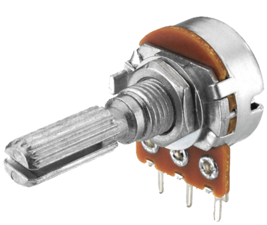
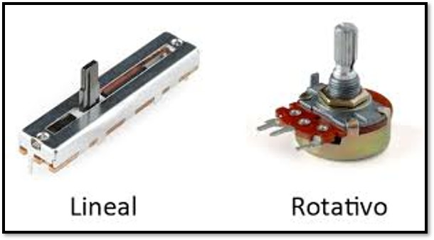
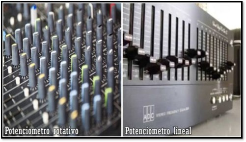
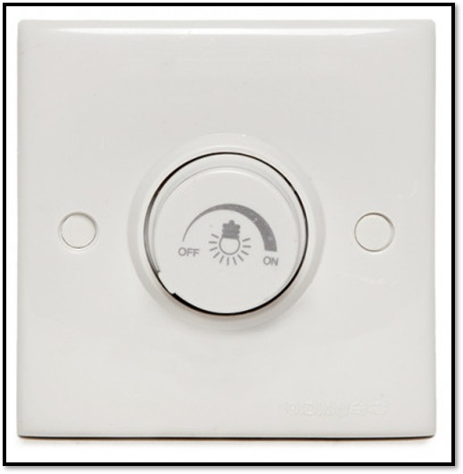
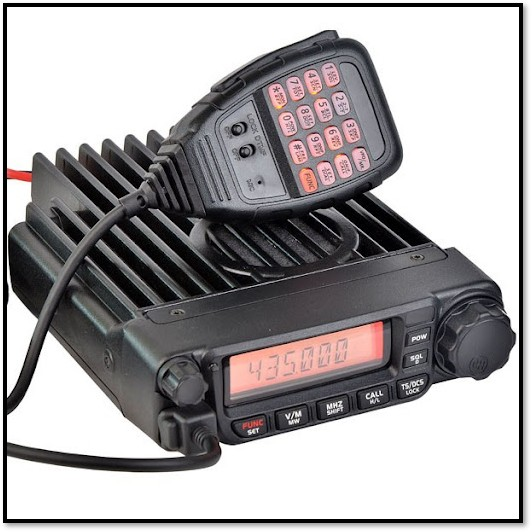

En las siguientes pestañas aprenderemos un poco sobre el potenciómetro:
Definición
Un potenciómetro es un componente electrónico, similar a una resistencia, pero con la particularidad de que su valor de resistencia es variable y ajustable manualmente. Esto permite controlar la corriente o el voltaje en un circuito electrónico. Generalmente, un potenciómetro tiene tres terminales y se utiliza para ajustar funciones como el volumen en equipos de audio, el brillo en pantallas o la posición de mecanismos, entre otros.

Tipos
Existen comúnmente dos tipos de potenciómetros y en la siguiente imagen se puede apreciarlos.

Ejemplos
En la siguiente tabla podemos apreciar algunos ejemplos:
| Ejemplo | Imagen |
| En audio |  |
| En iluminación (dimmer o regulador de luz) |  |
| Equipos de radio transmisión |  |